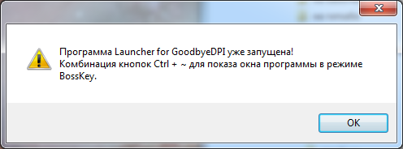

Приветствую.
Подскажите что такое режим BossKey?
И как набрать ~ (волну)?

Это тильда на кнопке Ё, ниже клавиши Esc 
Спасибо, только ничего не появляется, если выбрать английскую раскладку и нажать Ctrl + шифт + Ё
А написано нажать CTRL и ~
Очень распространённый символ у них для обозначения протянутого слога~
Зачем лаунчер от сторонних разработчиков использовать, чего не хватает в оригинальной программе? Можно просто запустить в виде службы и забыть